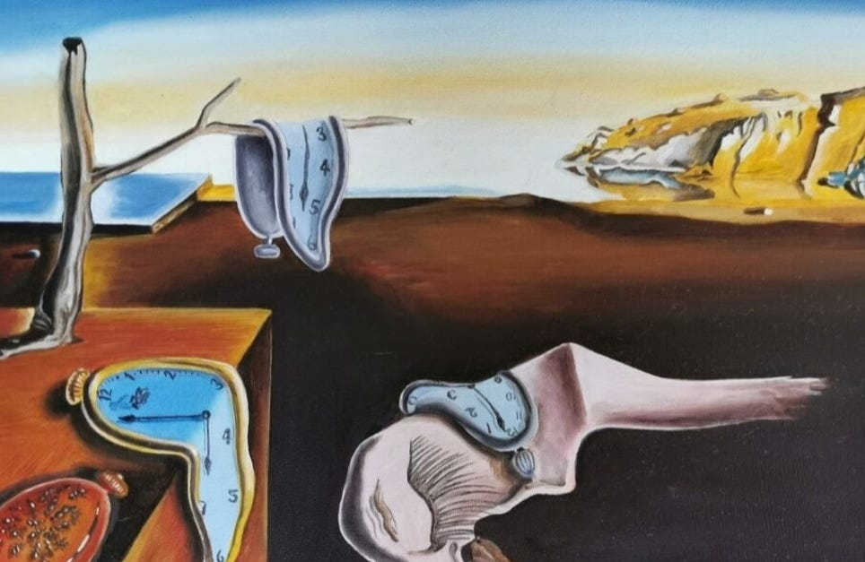
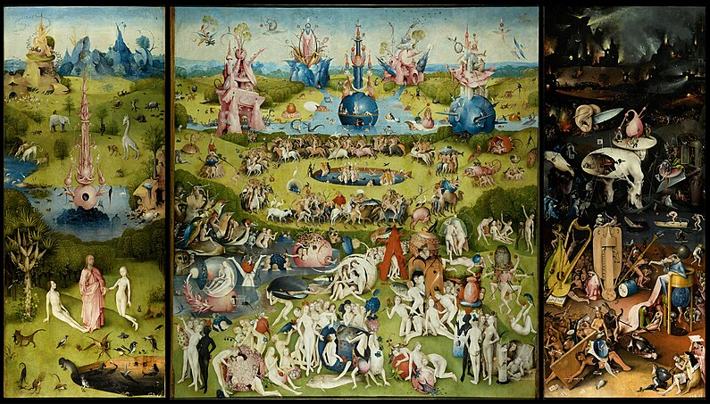

Modern Art
Modern art challenges traditional norms with its unique approach, vibrant colors, and profound themes. Discover the creativity of artists like Picasso, Dalí, and Kandinsky.
The Persistence of Memory” by Salvador Dalí
Salvador Dalí’s The Persistence of Memory (1931) portrays melting clocks in a surreal, dreamlike landscape, symbolizing the fluidity of time.
The Garden of Earthly Delights – Hieronymus
Bosch’s The Garden of Earthly Delights is a captivating exploration of human desire, sin, and the consequences of indulgence, set in surreal, otherworldly landscapes."